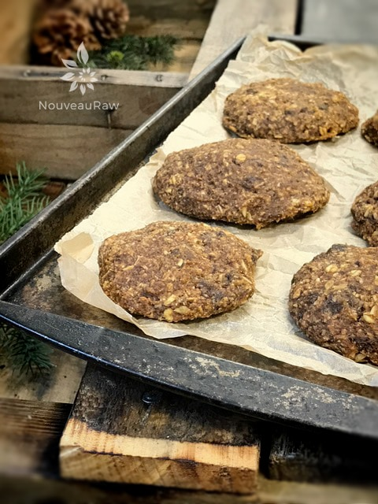

Pumpkin Oatmeal Raisin Cookies
~ raw, vegan, gluten-free ~
I really enjoy making raw cookies because they tend to just “happen” as I start to pull ingredients out of the pantry. It’s funny how life has a way of doing a “swap-a-roo” on you. Years ago I told my husband that I would like to be a pastry chef.
Cooking a meal scared me because I was never one who could just “throw” a dish together. If I didn’t have a recipe with step by step directions, I was lost. Then to top it off, if it had more than 3 or 4 ingredients, I really started to tremble.
Baking was a different ball of wax. Everything had to be precise. Every measurement, every step, was conducted and laid out for you. This brought me great comfort.
When I started my raw journey, everything changed for me. I can’t explain why or how but this is where that “swap-a-roo” thing happened. All of a sudden (well not instantly, but in a short amount of time) my world opened up to the freedom of preparing food. No longer did I need a recipe to follow and no longer did I fear an arsenal of ingredients.
Every day became an experiment, a joy, I was free! *throws hands in the air and runs in circles* Now, I almost fear the idea of being an actual baker.
To be confined by rules and techniques which are the only guarantee a product’s outcome just doesn’t seem so fun anymore. With raw, you can taste test at every level and modify as you go. If you are not there just yet, hang in there… keep making raw recipes and in time the weight will be lifted off of you too. :)
These cookies are not sugary sweet. I used date paste as the main sweetener which is about 1/2 as sweet as maple syrup so if you have a real sweet tooth you can add additional sweetener(s). Keep in mind that if you add more liquid, you might need to add a few more oats. Enjoy!
Yields 8-9 cookies (used 1/4 cup cookie scoop)
- 1/2 cup (132 g) raw pumpkin puree
- 1/3 cup (100 g) date paste
- 1-3 Tbsp (22 g) raw honey
- 1/2 tsp (4 g) Himalayan pink salt
- 1-2 tsp (3-6 g) pumpkin spice
- 1 cup (100 g) raw pecans, soaked
Preparation:
- Note on the oats: If you practice soaking the oats, don’t skip the step of dehydrating them for this recipe. Many times you can just soak the oats and add them to a recipe wet but for this recipe, I recommend having them dry for texture purposes. Wet oats would give a “mushy” effect… not that is a bad thing, just a different texture.
- In a medium-size bowl toss together; oats and raisins.
- After soaking the pecans, rinse and drain the excess water. If you have soaked and dehydrated pecans already on hand, use those, but don’t re-soak them.
- In the food processor combine; pumpkin puree, date paste, honey, salt, pumpkin spice, and pecans. Blend until semi-smooth. Keep some chunky texture.
- To make your own Pumpkin Spice, combine the following ingredients in a jar and shake well; 4 tsp cinnamon, 2 tsp ground ginger, 1 tsp Allpsice, 1 tsp nutmeg. This will make more than what you need for this recipe.
- Add the wet ingredients into the dry ingredients and mix till everything is well coated.
- Option: If you want the cookies to be more dough-like blended, place everything in the food processor and break it down. That is what I did for the cookies in these photos.
- Using the 2 Tbsp (or larger) cookie scoop, level off each scoopful and release it onto the teflex sheet that comes with the dehydrator.
- Transfer the cookie to the mesh screen for drying.
- Dehydrate at 145 degrees (F) for 1 hour, then decrease to 115 degrees (F) for about 16 hours. The outside should be a bit dry and the inside should be moist.
- Storage: place the cookies in an airtight container. On the counter, they will last about 2-3 days. In the fridge for 1-2 weeks. In the freezer for 2-3 months.
Culinary Explanations:
- Why do I start the dehydrator at 145 degrees (F)? Click (here) to learn the reason behind this.
- When working with fresh ingredients it is important to taste test as you build a recipe. Learn why (here).
- Don’t own a dehydrator? Learn how to use your oven (here). I do however truly believe that it is a worthwhile investment. Click (here) to learn what I use.

This is what they look like after they have dried.
© AmieSue.com